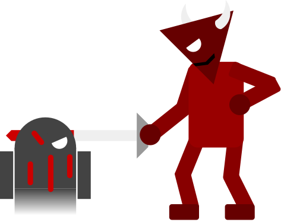

Here lies the worst websites of all; due to their malicious nature, they may not be named here to prevent harm to viewers.
These people served as the online version of the Trojan horse; thinking they downloaded something good, countless became horrified to realize that what they chased after actually harmed them. Likewise, shades chase after a thin beam of light from above, thinking that it represents a way to heaven; however, as they chase the light, they are brutally slashed and beaten by demons that appear in their path, preventing them from finally capturing that thin beam to salvation. They never give up hope, however, creating out a lifetime of punishment.
Here, Satan is portrayed by an organic depiction of the Morris worm, a hellish computer worm that rocked the early Internet. This worm was not written to cause damage, with its original function being to gauge the size of the Internet. However, a distinct feature with the worm’s copy mechanism caused it to spread rapidly to many of the early internet-enabled computers and cause massive damage to the fledgling Internet. This monster effectively represents Satan as it originally served a useful purpose, but in its lifetime it fell from its purpose and became the first of the scourge of evil that has come to characterize the malicious nature of some computer programs.